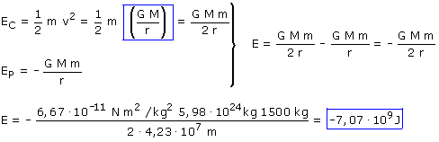

b) El enunciado de este problema confunde. No piden la energía necesaria para colocar el satélite en órbita sino la energía mecánica que tiene en órbita La energía mecánica o total es la suma de las energías cinética y potencial:  Una energía mecánica negativa indica que el satélite está ligado al planeta, no puede escapar de él |